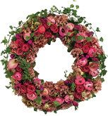

(401) 847-1111
212 Broadway
Newport, RI 02840
We deliver same day to all local residences, hotels, inns, bed-and-breakfasts, and local businesses.

About Us
The Waters Edge Flowers is a family-owned-and-operated, full-service florist shop in Newport, Rhode Island, specializing in everyday floral needs, weddings and funeral arrangements. We are very experienced in all aspects of this industry and are well-known in the community. Our shop provides many types of exotic, high-end flowers not found at general florists, and we offer custom-designed arrangements to suit your needs.
As Newport County's premier florist, we have been serving the community for more than 45 years. Customers say we produce high-quality arrangements for any event they are attending. We have been honored with multiple awards from Rhode Island Monthly Magazine, Newport Life, and Best of Newport.